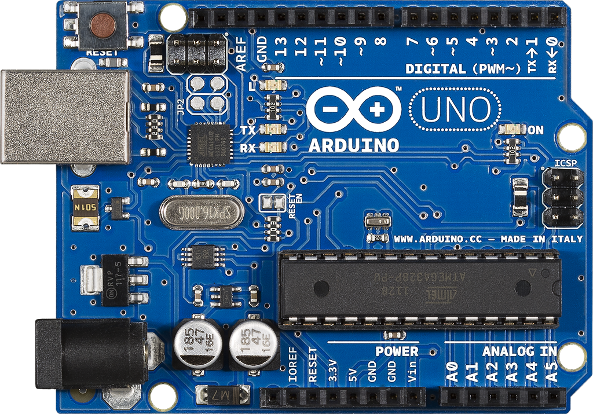
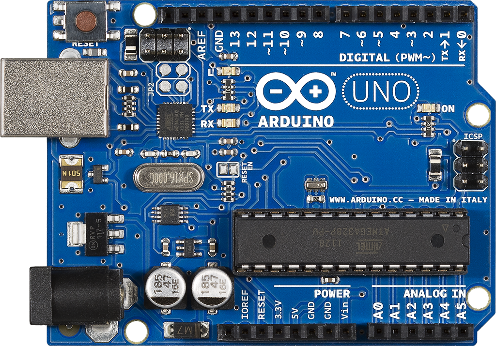

Title: (4 Months) Project Manager of Latch
Date: Senior at Penn State
Problem: To lead a team of 8 computer and software engineers to build a working prototype of a soon to be released prodcut called Latch
Solution: Integrating a network controller with personal cloud server to securely manage user credentials, access permissions, and other home board defined events and making this combined system function to align with other user friendly applications and database structures
Process: Used scrum agile methodology to focus attention of features within 2 week sprints
Tools: Scrum Agile, Basecamp, Slack, Wigan, JSON, C, Arduino, Omnigraffle
Lessons: Become comfortable with the language your team uses to build trust and pull unnessary tasks away from them to not get distracted on the main goal
 
